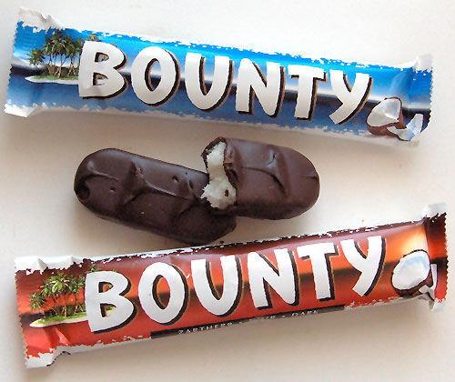

Baton czekoladowy produkowany przez Mars Incorporated. Składa się z masy wiórków kokosowych oblanych mleczną czekoladą. W klasycznym opakowaniu znajdują się dwa batony. Baton zawiera 469 kcal/100g, co daje 267,3 kcal/baton (57 gramów). Od 2007 roku wszystkie batony Bounty w Europie nie są już wegańskie. Może to dotyczyć również krajów spoza Europy. Serwatka w takich produktach jak Twix, Celebrations, Bounty i Milky Way wytwarzana jest przy udziale podpuszczki zwierzęcej.
cukier, wiórki kokosowe (ok.21%), syrop glukozanowy, masło kakaowe, odtłuszczone mleko w proszku, miazga kakaowa, emulgator (mono- i diglicerydy kwasów tłuszczowych), lecytyna sojowa (E 471), laktoza, tłuszcz mleczny, serwatka w proszku, glicerol (substancja utrzymująca wilgotność E422), sól, aromat.